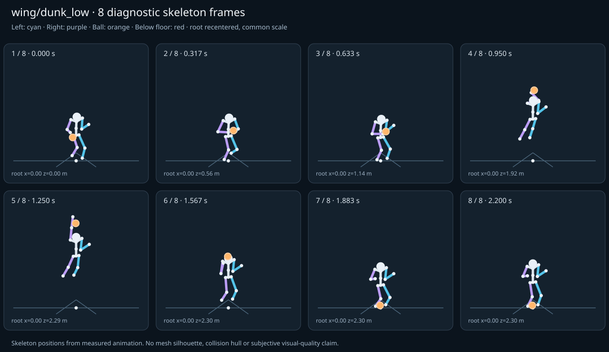

מה הוריד את הציון
- קפיצות פוזה: LeftHand בזמן 0.5833 ש׳; קפיצת סיבוב שקולה 121.3937 מעלות ב־60Hz (אדום)
- כניסה ויציאה מול המתנה: פער ב־כניסה מול המתנה; יחס חריגה 3.4387 (אדום)
- מגע בכדור: פער פני כדור 0.0339 מ׳, RightHand, בזמן 0.5833 ש׳ (צהוב)
כיסוי: 100%. לא כל מדד חל על כל קליפ; הסטטוס והראיות מפורטים למטה.
שמונה פריימים
תצוגת שלד אבחונית שנבנתה מהפריימים הנמדדים. צד שמאל בכחול, ימין בסגול, כדור בכתום. מיקום השורש ממורכז לצפייה; מיקומו בעולם כתוב בכל פריים.

המדדים והראיות
| מדד | מצב | ערך | ציון | סף ופרטי מדידה |
|---|---|---|---|---|
| החלקת רגליים | ירוק | 0.001 height ratio | 99 | {
"definition": {
"label": "החלקת רגליים",
"unit": "height ratio",
"green": 0.01,
"yellow": 0.035,
"weight": 18,
"description": "Maximum horizontal sole displacement from the first sample of each declared support window, divided by character height. Inferred support is used only when no windows were supplied."
},
"value": 0.000694,
"status": "green",
"score": 98.61,
"evidence": {
"coordinateSpace": "native GLB external Motion node (applied once)",
"supportSource": "declared",
"windows": 6,
"samples": 104,
"maxDriftMeters": 0.001375,
"p95SpeedMetersPerSecond": 0.041167,
"worst": {
"bone": "RightFoot",
"t": 0.716667,
"start": 0.6,
"end": 0.8,
"driftMeters": 0.001375
}
}
} |
| חדירה לרצפה | ירוק | 0.002 height ratio | 91 | {
"definition": {
"label": "חדירה לרצפה",
"unit": "height ratio",
"green": 0.005,
"yellow": 0.02,
"weight": 15,
"description": "Maximum depth of the supplied sole probe points and all skeletal joint centers below the declared floor plane, divided by height. Sole probes are not a mesh collision audit."
},
"value": 0.002217,
"status": "green",
"score": 91.13,
"evidence": {
"samples": 2660,
"floorY": 0,
"probeKind": "declared sole probes plus skeletal joint centers (no mesh surfaces)",
"maxDepthMeters": 0.004389,
"worst": {
"t": 0.75,
"bone": "LeftFoot",
"depthMeters": 0.004389,
"y": -0.004389
}
}
} |
| קפיצות פוזה | אדום | 8.093 discontinuity ratio | 0 | {
"definition": {
"label": "קפיצות פוזה",
"unit": "discontinuity ratio",
"green": 1,
"yellow": 2.5,
"weight": 18,
"description": "Maximum adjacent 60 Hz-equivalent step: root-relative marker displacement / 0.04 height, root-relative rotation / 15 degrees, or root translation / 0.08 height. A fast continuous action can also exceed this screening threshold."
},
"value": 8.092917,
"status": "red",
"score": 0,
"evidence": {
"adjacentPairs": 132,
"observations": 2244,
"maxDegrees60Hz": 121.39375,
"maxMarkerStepHeight60Hz": 0.124448,
"maxRootStepHeight60Hz": 0.030397,
"worst": {
"ratio": 8.092916693802815,
"t": 0.583333,
"previousTime": 0.566667,
"bone": "LeftHand",
"markerStepHeight60Hz": 0.108191,
"degrees60Hz": 121.39375
}
}
} |
| חריגות אנטומיות | ירוק | 0 % affected frames | 100 | {
"definition": {
"label": "חריגות אנטומיות",
"unit": "% affected frames",
"green": 0.5,
"yellow": 3,
"weight": 14,
"description": "Percentage of frames with elbow or knee flexion above 165 degrees, neck bend above 80 degrees, or a segment length changing by more than 5%. Optional calibrated hinge checks detect reverse knee flexion above 8 degrees. Conservative marker limits do not diagnose axial joint twist."
},
"value": 0,
"status": "green",
"score": 100,
"evidence": {
"testedFrames": 133,
"affectedFrames": 0,
"checks": 2261,
"maxLimbFlexionDegrees": 156.049335,
"maxRelativeSegmentLengthChange": 0,
"hingeDirectionChecked": true,
"axialTwistChecked": false,
"violations": []
}
} |
| מגע בכדור | צהוב | 0.017 height ratio | 78 | {
"definition": {
"label": "מגע בכדור",
"unit": "height ratio",
"green": 0.015,
"yellow": 0.05,
"weight": 13,
"description": "Maximum absolute distance from the ball surface to the sampled, bone-transformed declared contact point, divided by height. Events are evaluated at their exact declared times by interpolation."
},
"value": 0.017125,
"status": "yellow",
"score": 78.18,
"evidence": {
"radiusMeters": 0.12,
"samples": 97,
"missed": [],
"contacts": [
{
"t": 0.583333,
"bone": "RightHand",
"gapMeters": 0.033907,
"signedGapMeters": -0.033907,
"centerDistanceMeters": 0.086093,
"contactPoint": [
-0.075735,
1.11624,
1.419651
],
"ballCenter": [
0,
1.114846,
1.460569
],
"declaredLocalPoint": true
},
{
"t": 0.183333,
"bone": "RightHand",
"gapMeters": 0.024722,
"signedGapMeters": -0.024722,
"centerDistanceMeters": 0.095278,
"contactPoint": [
-0.213243,
1.140375,
0.740279
],
"ballCenter": [
-0.17,
1.059637,
0.714026
],
"declaredLocalPoint": true
},
{
"t": 0.85,
"bone": "RightHand",
"gapMeters": 0.003459,
"signedGapMeters": -0.003459,
"centerDistanceMeters": 0.116541,
"contactPoint": [
-0.033997,
1.834212,
1.800775
],
"ballCenter": [
-0.04,
1.834476,
1.917161
],
"declaredLocalPoint": true
},
{
"t": 0.883333,
"bone": "RightHand",
"gapMeters": 0.002814,
"signedGapMeters": -0.002814,
"centerDistanceMeters": 0.117186,
"contactPoint": [
-0.043267,
2.054326,
1.85042
],
"ballCenter": [
-0.047917,
2.054766,
1.967513
],
"declaredLocalPoint": true
},
{
"t": 0.816667,
"bone": "RightHand",
"gapMeters": 0.002481,
"signedGapMeters": -0.002481,
"centerDistanceMeters": 0.117519,
"contactPoint": [
-0.026223,
1.669406,
1.78157
],
"ballCenter": [
-0.032083,
1.666532,
1.898907
],
"declaredLocalPoint": true
},
{
"t": 0.116667,
"bone": "RightHand",
"gapMeters": 0.002066,
"signedGapMeters": -0.002066,
"centerDistanceMeters": 0.117934,
"contactPoint": [
-0.33834,
0.872769,
0.528103
],
"ballCenter": [
-0.34,
0.754866,
0.525974
],
"declaredLocalPoint": true
},
{
"t": 0.05,
"bone": "RightHand",
"gapMeters": 0.001964,
"signedGapMeters": -0.001964,
"centerDistanceMeters": 0.118036,
"contactPoint": [
-0.338442,
0.873751,
0.386073
],
"ballCenter": [
-0.34,
0.755741,
0.384136
],
"declaredLocalPoint": true
},
{
"t": 0.783333,
"bone": "RightHand",
"gapMeters": 0.001776,
"signedGapMeters": -0.001776,
"centerDistanceMeters": 0.118224,
"contactPoint": [
-0.019447,
1.537347,
1.773114
],
"ballCenter": [
-0.02445,
1.534077,
1.891187
],
"declaredLocalPoint": true
},
{
"t": 0.916667,
"bone": "RightHand",
"gapMeters": 0.001562,
"signedGapMeters": -0.001562,
"centerDistanceMeters": 0.118438,
"contactPoint": [
-0.052466,
2.306437,
1.921685
],
"ballCenter": [
-0.05555,
2.306322,
2.040082
],
"declaredLocalPoint": true
},
{
"t": 0.016667,
"bone": "RightHand",
"gapMeters": 0.001299,
"signedGapMeters": -0.001299,
"centerDistanceMeters": 0.118701,
"contactPoint": [
-0.338489,
0.993039,
0.355935
],
"ballCenter": [
-0.34,
0.874526,
0.349431
],
"declaredLocalPoint": true
},
{
"t": 0.75,
"bone": "RightHand",
"gapMeters": 0.001284,
"signedGapMeters": -0.001284,
"centerDistanceMeters": 0.118716,
"contactPoint": [
-0.014097,
1.397445,
1.728021
],
"ballCenter": [
-0.017387,
1.395764,
1.84668
],
"declaredLocalPoint": true
},
{
"t": 0.15,
"bone": "RightHand",
"gapMeters": 0.001158,
"signedGapMeters": -0.001158,
"centerDistanceMeters": 0.118842,
"contactPoint": [
-0.338583,
0.991739,
0.621965
],
"ballCenter": [
-0.34,
0.873109,
0.615
],
"declaredLocalPoint": true
},
{
"t": 0.716667,
"bone": "RightHand",
"gapMeters": 0.000811,
"signedGapMeters": -0.000811,
"centerDistanceMeters": 0.119189,
"contactPoint": [
-0.009287,
1.268972,
1.638881
],
"ballCenter": [
-0.011176,
1.268342,
1.758053
],
"declaredLocalPoint": true
},
{
"t": 1.016667,
"bone": "RightHand",
"gapMeters": 0.00072,
"signedGapMeters": -0.00072,
"centerDistanceMeters": 0.11928,
"contactPoint": [
-0.070467,
3.037467,
2.173043
],
"ballCenter": [
-0.073896,
3.037795,
2.292274
],
"declaredLocalPoint": true
},
{
"t": 1.05,
"bone": "RightHand",
"gapMeters": 0.000701,
"signedGapMeters": -0.000701,
"centerDistanceMeters": 0.119299,
"contactPoint": [
-0.075863,
3.203463,
2.235606
],
"ballCenter": [
-0.077547,
3.203622,
2.354893
],
"declaredLocalPoint": true
},
{
"t": 0.95,
"bone": "RightHand",
"gapMeters": 0.000599,
"signedGapMeters": -0.000599,
"centerDistanceMeters": 0.119401,
"contactPoint": [
-0.059896,
2.568281,
2.005617
],
"ballCenter": [
-0.062613,
2.568066,
2.124987
],
"declaredLocalPoint": true
},
{
"t": 1.116667,
"bone": "RightHand",
"gapMeters": 0.00052,
"signedGapMeters": -0.00052,
"centerDistanceMeters": 0.11948,
"contactPoint": [
-0.078674,
3.294488,
2.281899
],
"ballCenter": [
-0.08,
3.294462,
2.401372
],
"declaredLocalPoint": true
},
{
"t": 1.15,
"bone": "RightHand",
"gapMeters": 0.00045,
"signedGapMeters": -0.00045,
"centerDistanceMeters": 0.11955,
"contactPoint": [
-0.076221,
3.226393,
2.283563
],
"ballCenter": [
-0.08,
3.226787,
2.403052
],
"declaredLocalPoint": true
},
{
"t": 0.683333,
"bone": "RightHand",
"gapMeters": 0.000445,
"signedGapMeters": -0.000445,
"centerDistanceMeters": 0.119555,
"contactPoint": [
-0.005148,
1.187152,
1.532715
],
"ballCenter": [
-0.006104,
1.187004,
1.652267
],
"declaredLocalPoint": true
},
{
"t": 0.983333,
"bone": "RightHand",
"gapMeters": 0.000255,
"signedGapMeters": -0.000255,
"centerDistanceMeters": 0.119745,
"contactPoint": [
-0.065411,
2.818829,
2.092648
],
"ballCenter": [
-0.068824,
2.818916,
2.212344
],
"declaredLocalPoint": true
}
],
"contactDetailsTruncated": true,
"coordinateSpace": "native GLB external Motion node (applied once)"
}
} |
| כניסה ויציאה מול המתנה | אדום | 3.439 continuity ratio | 46 | {
"definition": {
"label": "כניסה ויציאה מול המתנה",
"unit": "continuity ratio",
"green": 1,
"yellow": 3,
"weight": 10,
"description": "Worst entry/exit mismatch to the best matching idle phase: RMS marker error / 0.04 height, RMS bone rotation / 25 degrees, or RMS endpoint velocity error / 0.75 height per second. Horizontal root translation is aligned; root height and body pose remain measurable."
},
"value": 3.438714,
"status": "red",
"score": 46.34,
"evidence": {
"entry": {
"ratio": 3.438714283994236,
"t": 0,
"idleTime": 0,
"markers": 17,
"rmsPositionHeight": 0.137549,
"rmsRotationDegrees": 45.708087,
"rmsVelocityHeightPerSecond": 0.668809,
"velocityEvaluated": true
},
"exit": {
"ratio": 3.3015470327186724,
"t": 2.2,
"idleTime": 0,
"markers": 17,
"rmsPositionHeight": 0.132062,
"rmsRotationDegrees": 43.523463,
"rmsVelocityHeightPerSecond": 0.035432,
"velocityEvaluated": true
},
"worstEndpoint": "entry",
"alignment": "horizontal root translation; raw asset poses used when provided"
}
} |
| מהירות גוף מול צעדים | לא חל | — relative speed error | — | {
"definition": {
"label": "מהירות גוף מול צעדים",
"unit": "relative speed error",
"green": 0.2,
"yellow": 0.5,
"weight": 8,
"description": "Relative difference between average root travel speed and the median backward support-foot sweep speed relative to the root. Cadence and implied stride lengths are also reported. In-place clips need an explicit reference travel scenario; stationary actions are not scored as locomotion."
},
"value": null,
"status": "not-applicable",
"score": null,
"reason": "This action is not declared locomotion.",
"evidence": {}
} |
| סימטריה | ירוק | 0 relative mismatch | 100 | {
"definition": {
"label": "סימטריה",
"unit": "relative mismatch",
"green": 0.03,
"yellow": 0.1,
"weight": 4,
"description": "Maximum bilateral segment-length mismatch. Looping locomotion additionally compares reflected half-cycle leg markers; explicit pose symmetry compares simultaneous bilateral markers. One-sided actions retain unscored motion diagnostics, so a valid kick or dribble arm is not penalized for intentional asymmetry."
},
"value": 0,
"status": "green",
"score": 100,
"evidence": {
"mode": "structural",
"modeSource": "structural default for intentional asymmetry",
"structuralMismatch": 0,
"segments": [
{
"segment": "Arm-ForeArm",
"mismatch": 0
},
{
"segment": "ForeArm-Hand",
"mismatch": 0
},
{
"segment": "UpLeg-Leg",
"mismatch": 0
},
{
"segment": "Leg-Foot",
"mismatch": 0
}
],
"motionRmsHeight": null,
"worstMotion": null,
"bilateralPoseRmsHeightUnscored": 0.148994,
"note": "One-sided authored actions are checked for structural symmetry only."
}
} |